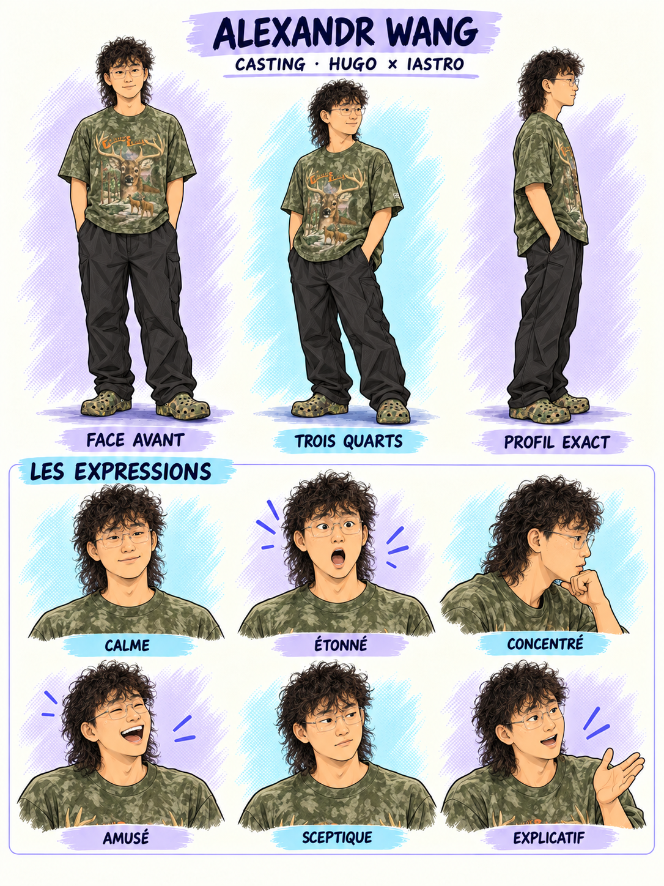
Alexandr Wang — look Meta Connect 2026
alexandr-wang-v2-connect
Variante proposée — octobre 2026Télécharger le PNG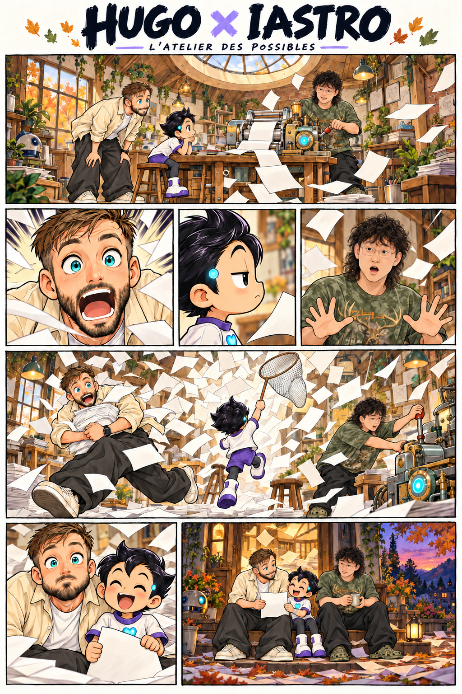
L’atelier des possibles — Wang en camouflage
atelier-des-possibles-v2-camouflage
Variante proposée — octobre 2026Télécharger le PNG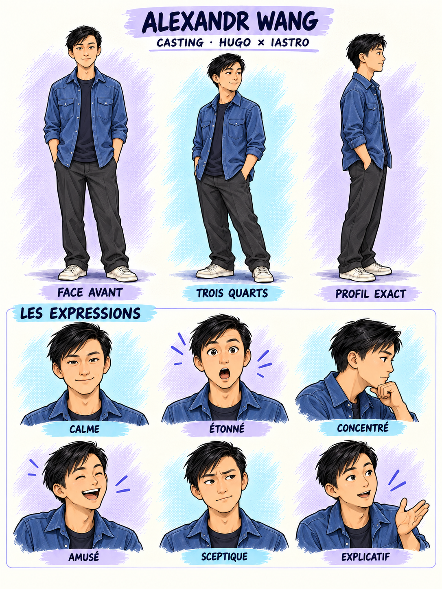
Alexandr Wang — angles et expressions
alexandr-wang-v1
Version historique — utiliser V2 pour le look actuelTélécharger le PNG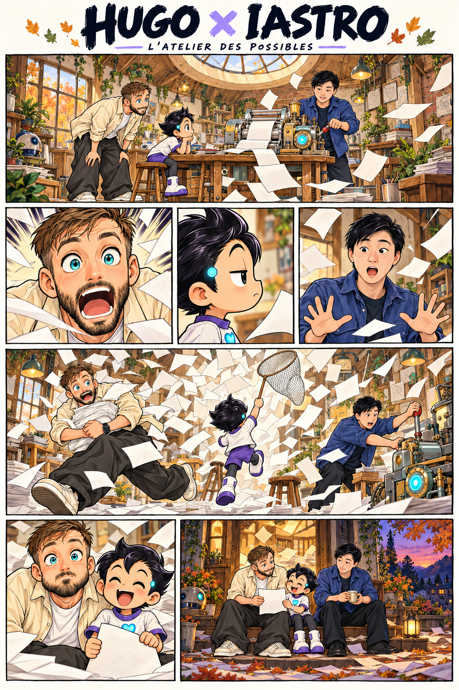
L’atelier des possibles — étude de rythme
atelier-des-possibles-v1
Mise en scène validée par HugoTélécharger le PNG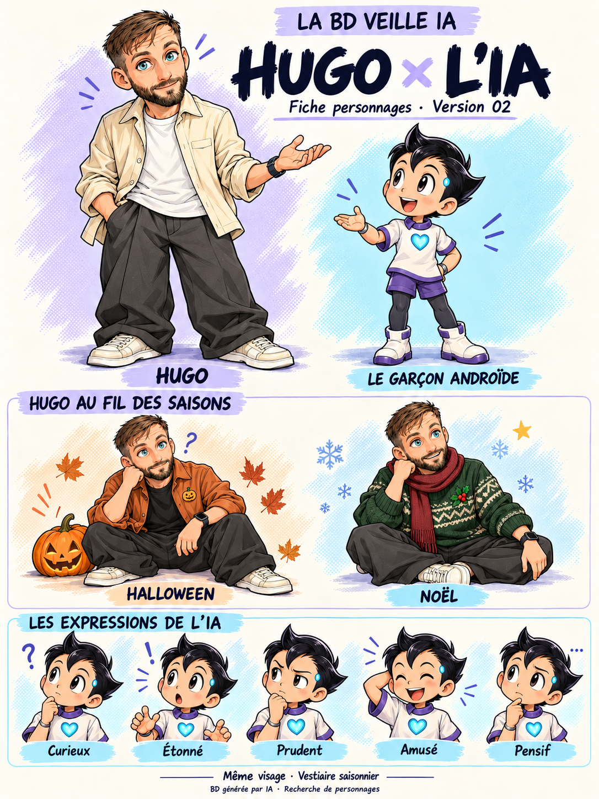
Duo — référence validée V2
duo-reference-v2
1086 × 1448 · approvedTélécharger le PNG
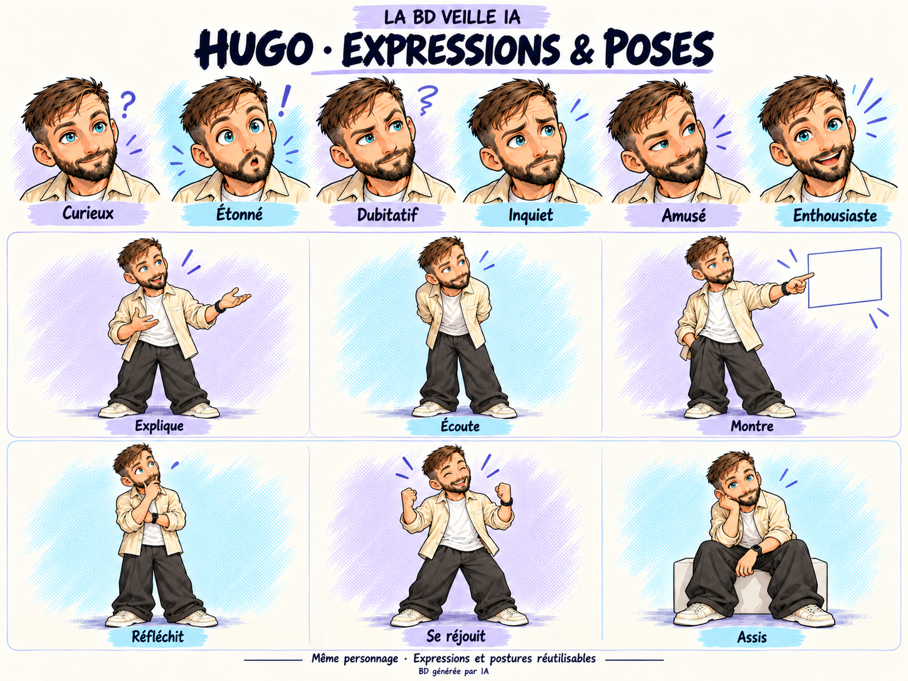
Hugo — expressions et poses
hugo-poses-v1
1448 × 1086 · approvedTélécharger le PNG
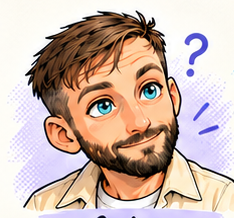
hugo · curieux
hugo-expression-curieux-v1
234 × 218 · approvedTélécharger le PNG
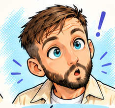
hugo · etonne
hugo-expression-etonne-v1
234 × 218 · approvedTélécharger le PNG
hugo · dubitatif
hugo-expression-dubitatif-v1
234 × 218 · approvedTélécharger le PNG
hugo · inquiet
hugo-expression-inquiet-v1
234 × 218 · approvedTélécharger le PNG
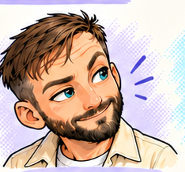
hugo · amuse
hugo-expression-amuse-v1
234 × 218 · approvedTélécharger le PNG
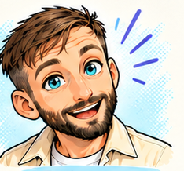
hugo · enthousiaste
hugo-expression-enthousiaste-v1
234 × 218 · approvedTélécharger le PNG
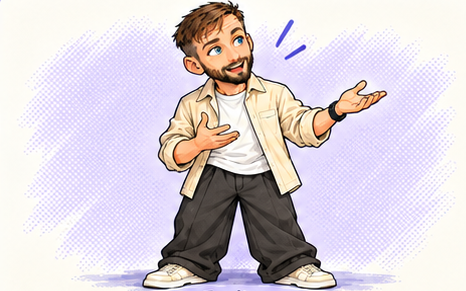
hugo · explique
hugo-pose-explique-v1
466 × 291 · approvedTélécharger le PNG
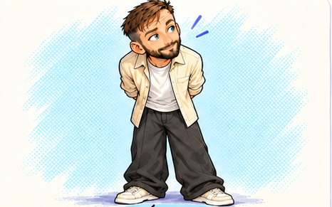
hugo · ecoute
hugo-pose-ecoute-v1
466 × 291 · approvedTélécharger le PNG
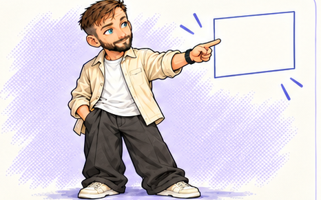
hugo · montre
hugo-pose-montre-v1
466 × 291 · approvedTélécharger le PNG
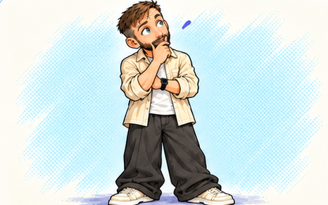
hugo · reflechit
hugo-pose-reflechit-v1
466 × 291 · approvedTélécharger le PNG
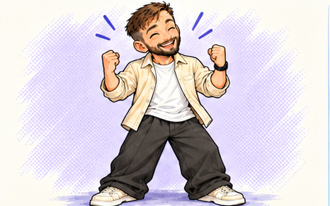
hugo · se-rejouit
hugo-pose-se-rejouit-v1
466 × 291 · approvedTélécharger le PNG
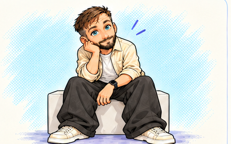
hugo · assis
hugo-pose-assis-v1
466 × 291 · approvedTélécharger le PNG
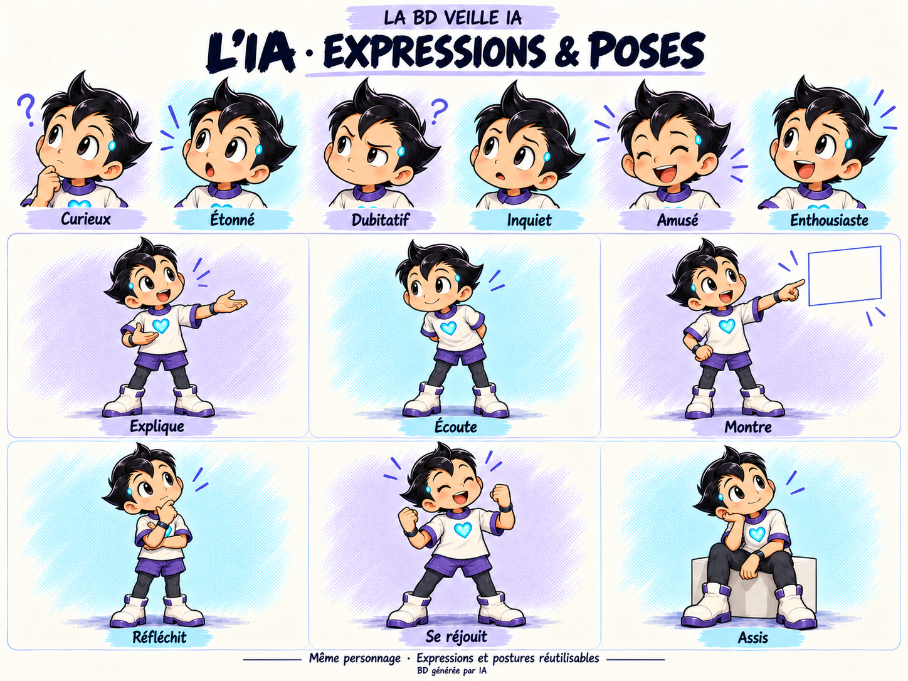
Iastro — expressions et poses
ia-poses-v1
1448 × 1086 · proposedTélécharger le PNG
Iastro · curieux
ia-expression-curieux-v1
234 × 218 · proposedTélécharger le PNG
Iastro · etonne
ia-expression-etonne-v1
234 × 218 · proposedTélécharger le PNG
Iastro · dubitatif
ia-expression-dubitatif-v1
234 × 218 · proposedTélécharger le PNG
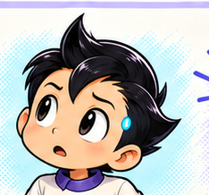
Iastro · inquiet
ia-expression-inquiet-v1
234 × 218 · proposedTélécharger le PNG
Iastro · amuse
ia-expression-amuse-v1
234 × 218 · proposedTélécharger le PNG
Iastro · enthousiaste
ia-expression-enthousiaste-v1
234 × 218 · proposedTélécharger le PNG
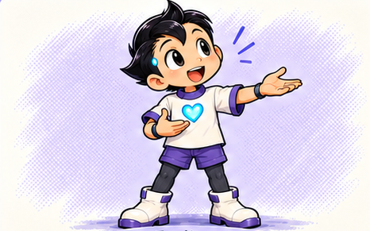
Iastro · explique
ia-pose-explique-v1
466 × 291 · proposedTélécharger le PNG
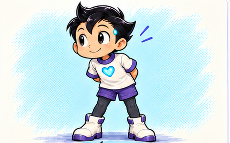
Iastro · ecoute
ia-pose-ecoute-v1
466 × 291 · proposedTélécharger le PNG
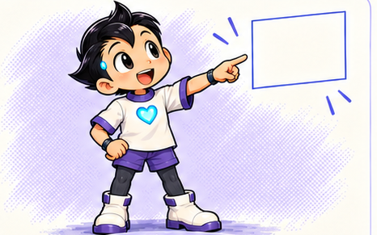
Iastro · montre
ia-pose-montre-v1
466 × 291 · proposedTélécharger le PNG
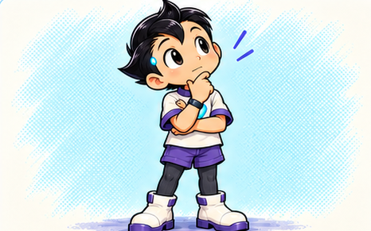
Iastro · reflechit
ia-pose-reflechit-v1
466 × 291 · proposedTélécharger le PNG
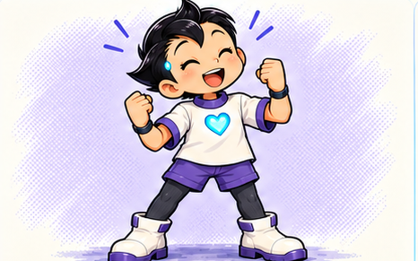
Iastro · se-rejouit
ia-pose-se-rejouit-v1
466 × 291 · proposedTélécharger le PNG
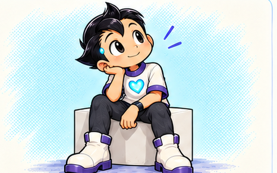
Iastro · assis
ia-pose-assis-v1
466 × 291 · proposedTélécharger le PNG
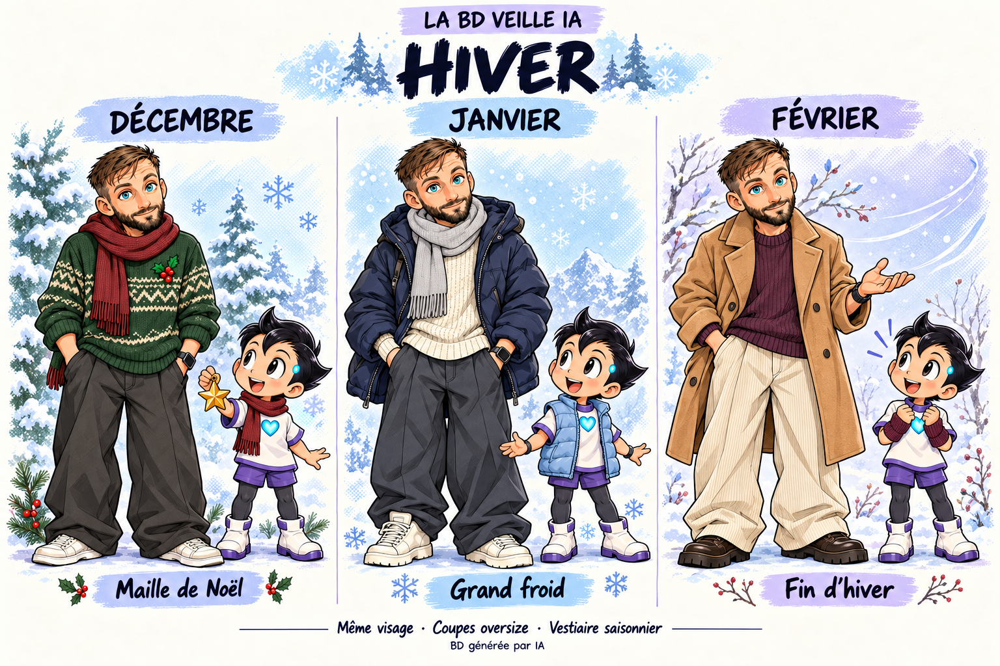
hiver — trois mois
season-hiver-v1
1536 × 1024 · deliveredTélécharger le PNG
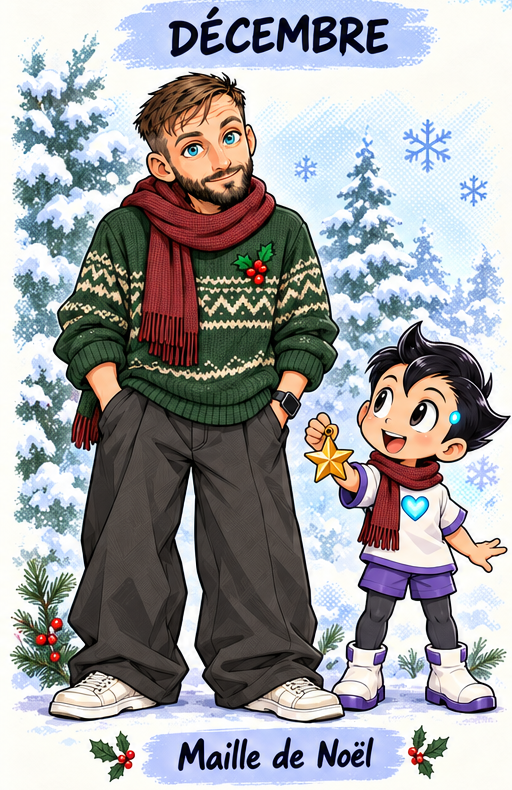
decembre · duo
month-12-decembre-v1
512 × 790 · deliveredTélécharger le PNG
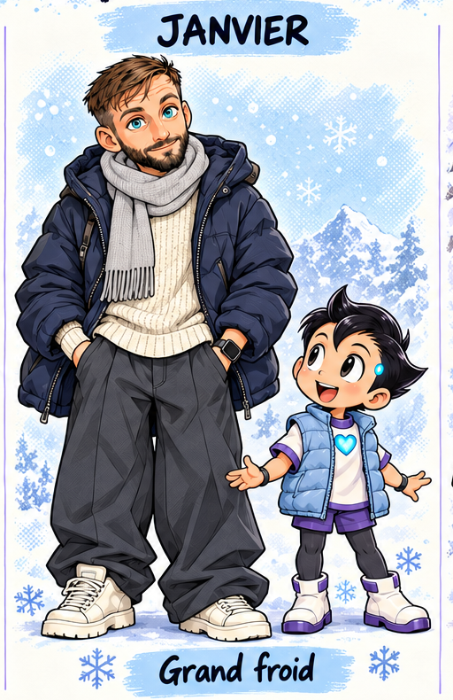
janvier · duo
month-01-janvier-v1
512 × 790 · deliveredTélécharger le PNG
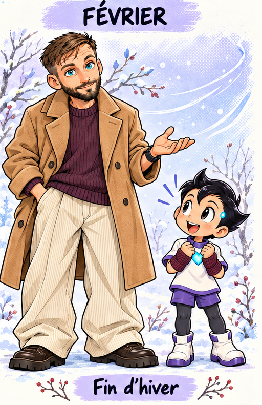
fevrier · duo
month-02-fevrier-v1
512 × 790 · deliveredTélécharger le PNG
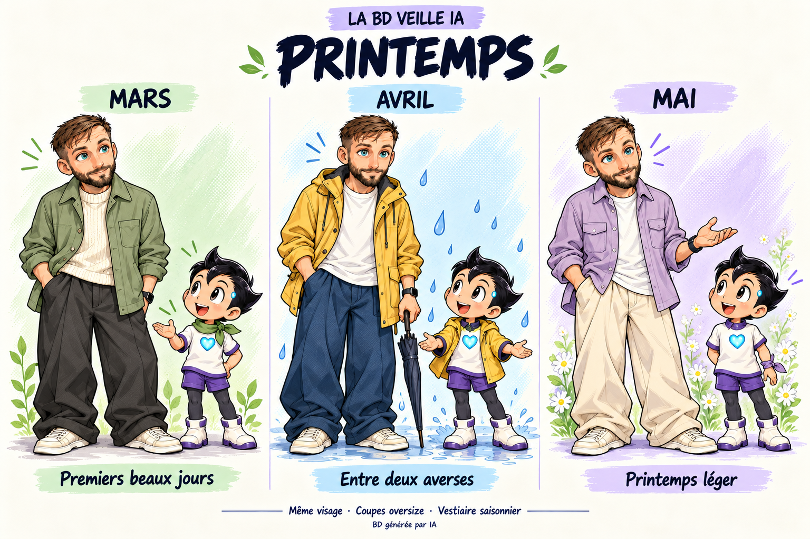
printemps — trois mois
season-printemps-v1
1536 × 1024 · deliveredTélécharger le PNG
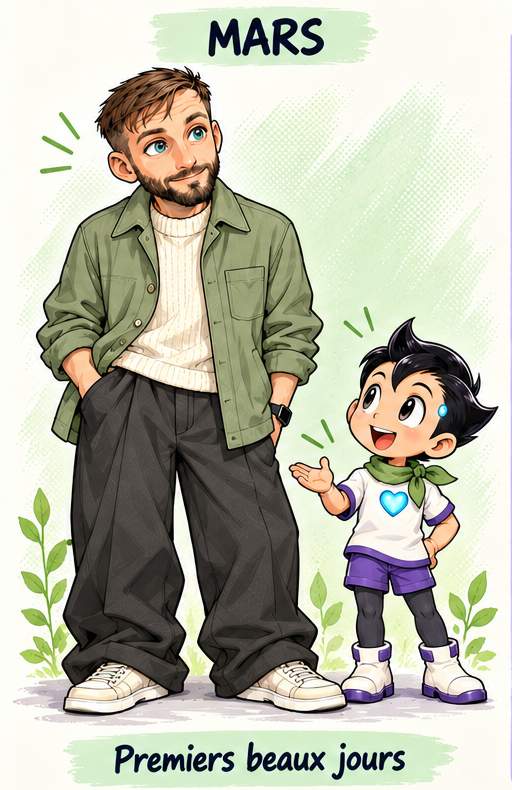
mars · duo
month-03-mars-v1
512 × 790 · deliveredTélécharger le PNG
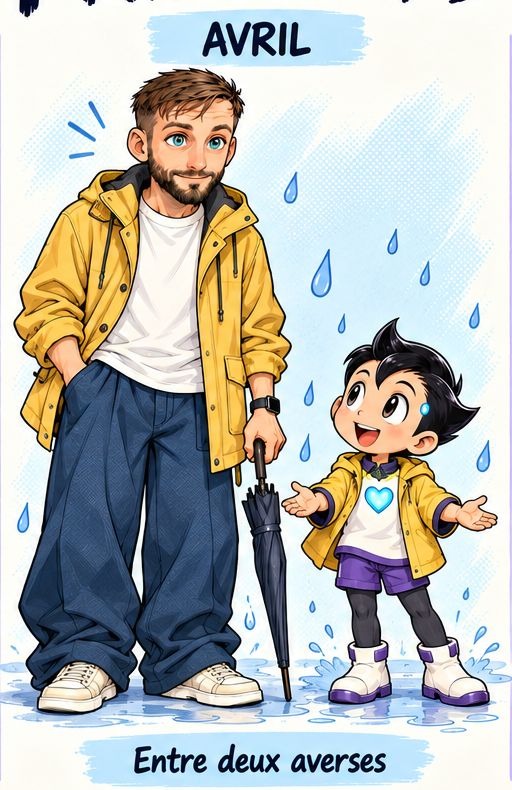
avril · duo
month-04-avril-v1
512 × 790 · deliveredTélécharger le PNG
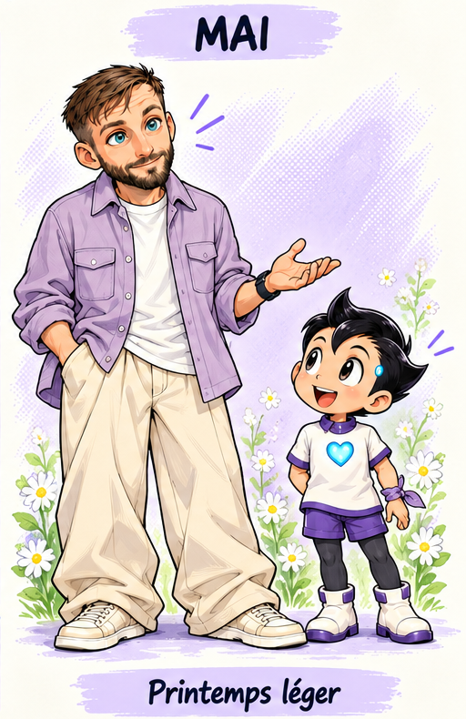
mai · duo
month-05-mai-v1
512 × 790 · deliveredTélécharger le PNG
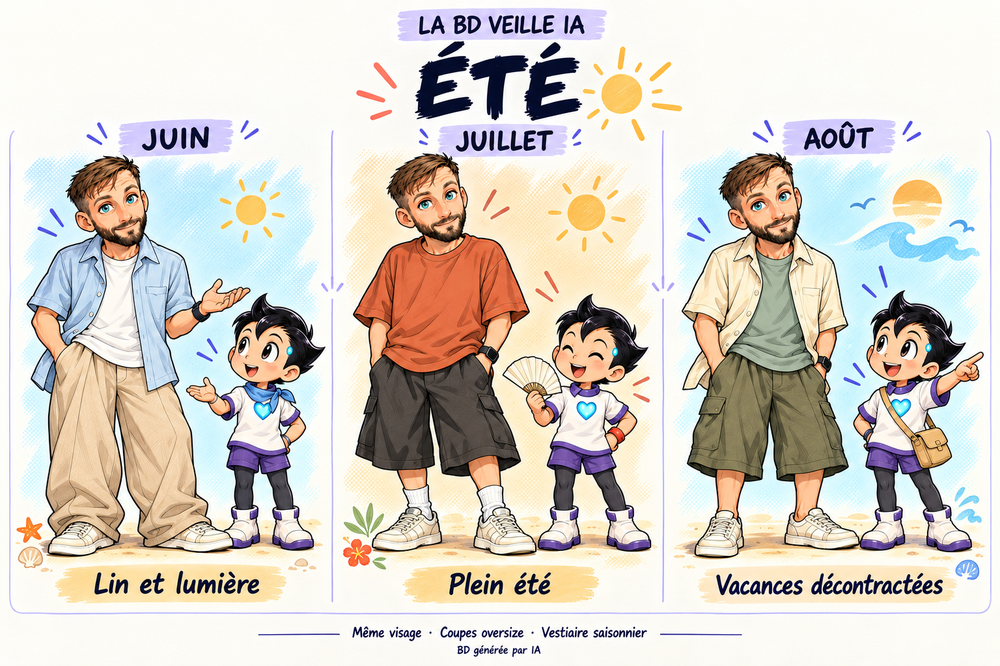
ete — trois mois
season-ete-v1
1536 × 1024 · deliveredTélécharger le PNG
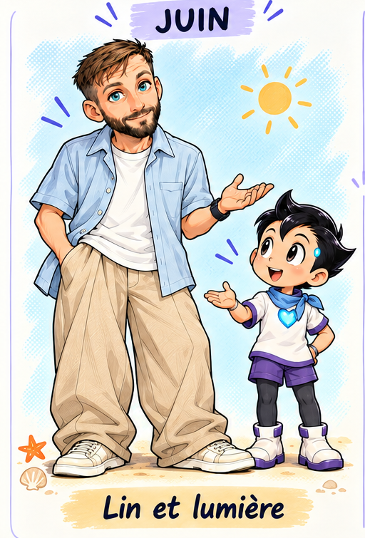
juin · duo
month-06-juin-v1
512 × 755 · deliveredTélécharger le PNG
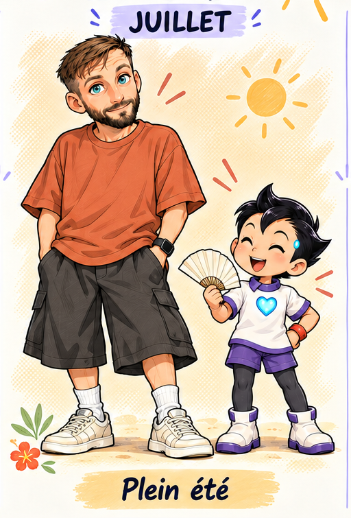
juillet · duo
month-07-juillet-v1
512 × 755 · deliveredTélécharger le PNG
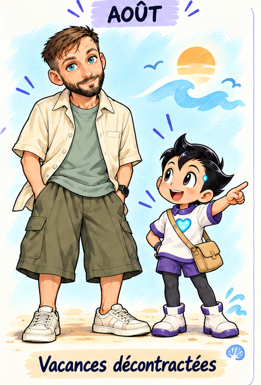
aout · duo
month-08-aout-v1
512 × 755 · deliveredTélécharger le PNG
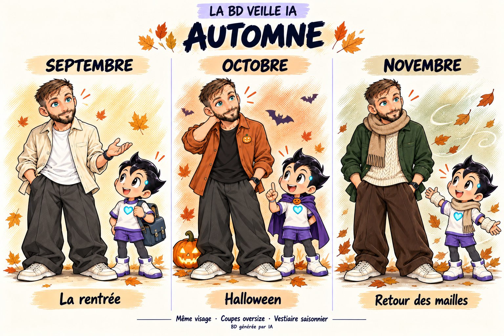
automne — trois mois
season-automne-v1
1536 × 1024 · deliveredTélécharger le PNG
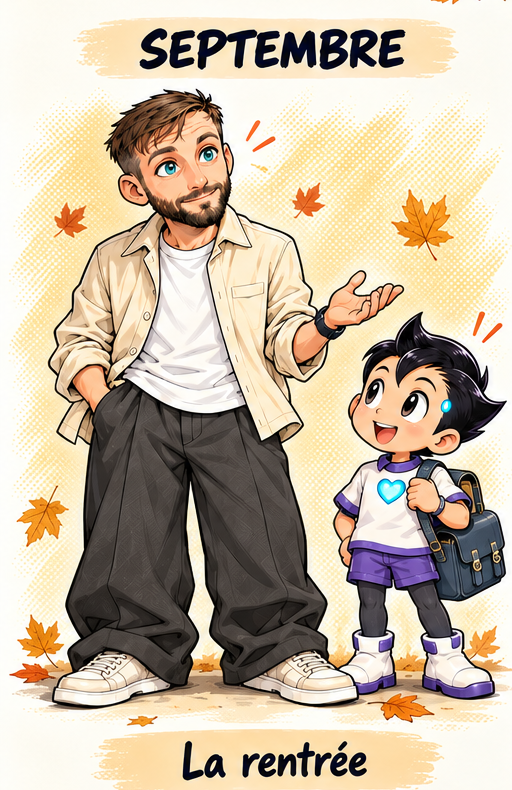
septembre · duo
month-09-septembre-v1
512 × 790 · deliveredTélécharger le PNG
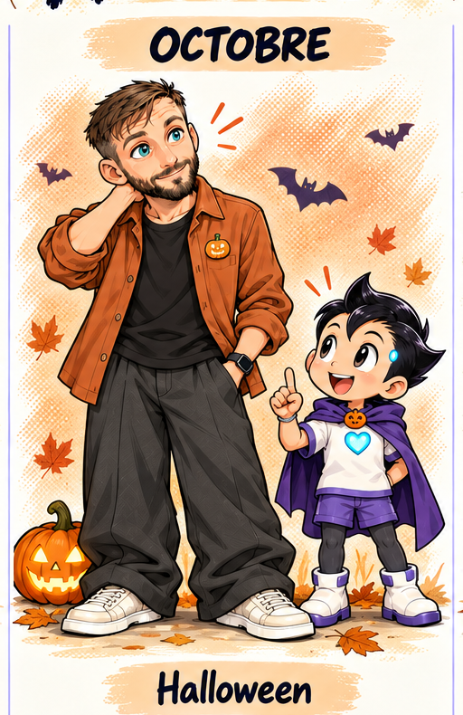
octobre · duo
month-10-octobre-v1
512 × 790 · deliveredTélécharger le PNG
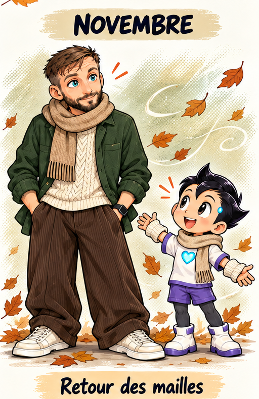
novembre · duo
month-11-novembre-v1
512 × 790 · deliveredTélécharger le PNG